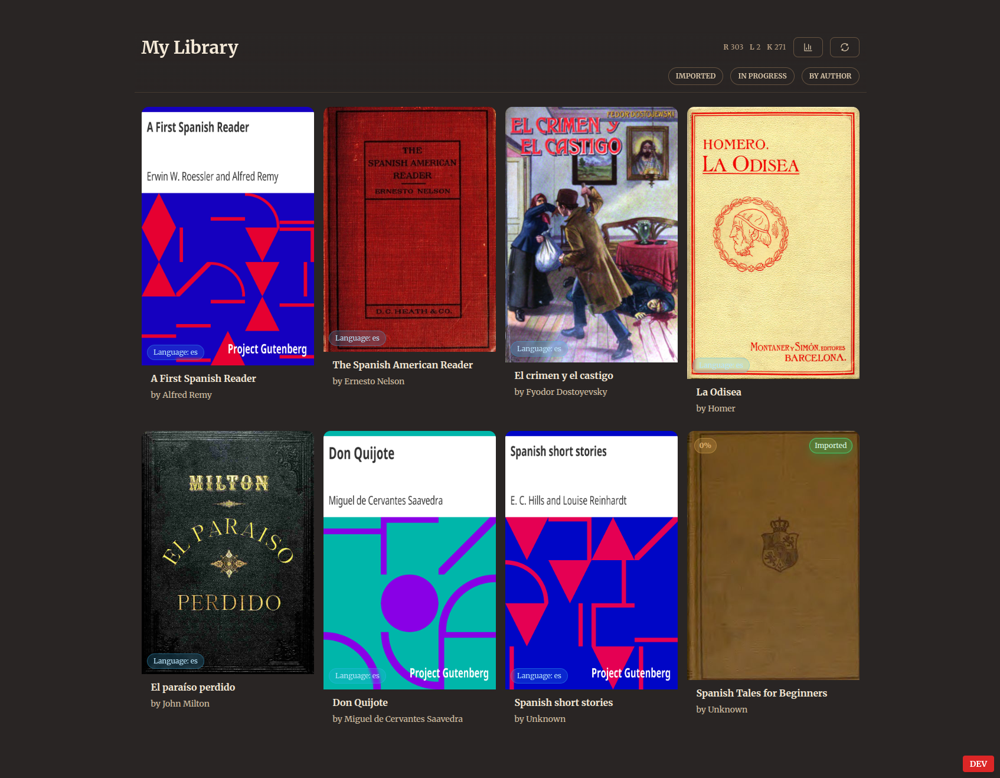
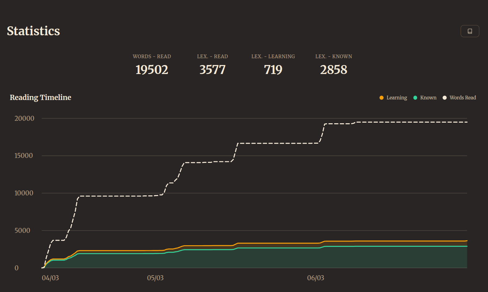
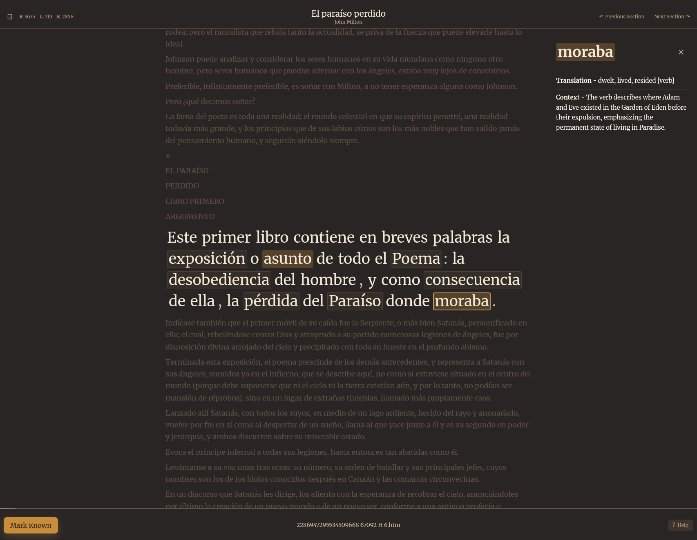
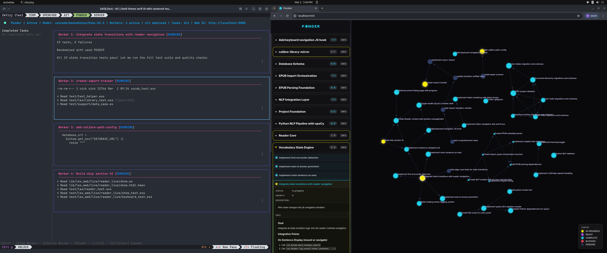

A big thank you to Chris and Ant from Zai Node for providing access to their Australian hosted, private GPU cluster for this project.
Introduction
I spent last year in denial.
I also spent last year employed… and maybe that partially explains the last 2 months. It is a wild time to be experimenting, without a boss to answer to, or an office to shuffle to each day.
I was using LLMs every day, like most of us are, but I was always in tight control of all the code I was producing, holding firm to the egoistic notion that, because I knew my work better than the stochastic parrot, I needed to keep my hands on the wheel at all times. I also didn’t really use it for anything other than coding help.
And when working with clients my hands are still firmly on the wheel, if not hovering just above it. Accountability and ownership of work done is still important, and these things can do a lot of damage very quickly. I’m sure we’re in for many disasters related to people letting the vibes take control at work. It is already happening…
I think you would be crazy to let coding agents loose without significant guardrails and environment separation in projects managing databases and cloud infrastructure…
In my own time, though? With no company data on the line?
There are still many people firmly in denial about what is happening, but my recent experience with AI agents has made it clear to me that software development has changed fundamentally, and most other knowledge work will probably follow in the next few years.
I’m not an outlier and none of this is intended as a boast, because I don’t think any of what I’m doing is particularly impressive, but it is what becomes accessible when you let go, you put the keyboard down and you open your mind to the army of digital gremlins that you can now summon at will.
The gremlins have gotten very smart, and maybe more importantly, very good at following instructions.
In the last two months, since deciding to really push myself with AI, I have
Built an agent orchestration “code factory” called Ponder, inspired by the likes of Geoffrey Huntley and Steve Yegge. First in Python (it was early) and then in Go (when I realised I should use a better tool, and my inability to code in it didn’t matter). I’ll explain Ponder a bit more later in this post.
Built a statistics library for reuse across all my company probabilistic modelling projects, with all the JSON serialization capabilities I’ve caught myself rebuilding over and over the past few years. It treats distributions and stochastic processes as primitives that can be composed into arbitrary Monte Carlo models, all serializable to JSON for database storage, and all lightning fast to simulate using
numpyandXarray.Built most of an end to end mine site scoping/early feasibility study tool, which is essentially a hard rock version of the Resgo tool that does this kind of analysis for oil and gas prospecting. Both are built on top of the statistics library.
Written a fairly comprehensive legal analysis on a Strata dispute I’m in the middle of, with references to relevant statutes and case law, packaged up into several professionally typefaced documents intended for various recipients.
Set up a personal assistant with access to my emails and a knowledge graph via Obsidian (though to be fair, I’ve barely used it).
Made significant refactors across several company projects
Created landing page websites for the company and its products
Perhaps most surprisingly for me, I have also
- Updated my resume
And most recently, I’ve built a language learner’s reading aide called Lex.
Lex

Lex solves a problem for me. I love reading in Spanish but I suck at it.
Reading in your target language is a great way to learn, but it can be frustrating. You are often caught in a trade-off between comprehension and enjoyment. Nobody wants to read children’s books; you want to read the things you would enjoy reading in your native language, but that is very difficult. Often you’ll miss context, and subtext, through an inability to comprehend at a high enough level, which makes it hard to appreciate what you are reading, which feels like a waste of good reading material.
Lex is the tool I’ve always wanted to help me read more difficult books, while keeping the text comprehensible and enjoyable. It is heavily inspired by LingQ, which I’ve used a lot in the past, but designed to work locally with my eBook collection, with LLM assistance built in, and keyboard shortcuts customized to my exact tastes (for me, that means Vim keybinds).
It runs as a web app locally on my home server, which other devices like my phone or laptop can access via my tailnet setup. It connects to my eBook library (using an open source program called Calibre), allowing quick imports into the database. The database tracks all the book content, as well as detailed statistics of the words I read, whether I know them or am still learning them, how many times I’ve seen them and so on.
It uses a Python based natural language processing pipeline to ingest text into the database, so that the content can be organized by sentence and lexeme (the abstract unit of meaning that words point to, like [“running”, “ran”, “runs”] = “run”) to make language learning progress more meaningful. Hence, Lex.
The basic set of Vim inspired keyboard shortcuts are: j and k move up and down sentences, w and b move forward and backwards through words, W and B skip straight to highlighted words, and space triggers LLM help on the current word. For me at least, it is a very nice user experience.
Everything is timestamped, so detailed time series information can be generated by the database for visualizations like this:

The collection of reading statistics is a nice motivating factor for a data nerd like me, and I’m finding myself in a bit of an addictive loop, keeping my learned words increasing over time with reading sessions each day. The white dashed line in the plot above is total words read, while the green and yellow areas are tracking lexemes that I know or am currently learning, respectively. Line go up. Feel good.
I’ve experimented with a variety of LLMs for the translation help inside the app, and have settled on Claude Haiku, because it is so fast and essentially free to run (I’ve spent about 25 cents so far). Locally running models will soon be the best solution for this kind of application as they’ll remove the network hop required with calling external model providers, though I found the latest Qwen 3.5 range of models to be either reliable but too slow, or unreliable and fast. At least for now, Haiku gives me the best mix of speed and reliability.
Because Phoenix LiveView (the web framework I used) is built around websockets (persistent connections between the server and client), streaming LLM output into the interface was easy to set up, and it helps reduce the perceived delay in responses. Everything feels very snappy and responsive.

Development Process
I decided to use Lex as an experiment, using open source models almost exclusively. I’ve been developing the impression that with good enough “context engineering”, open source tokens can be just as effective as the expensive Anthropic ones, and the gap in capability is rapidly closing.
Some friends of mine at the Australian AI startup Zai Node were kind enough to provide an API key for use on this project, as they share a lot of my optimism about local and open source LLM adoption. The majority of the project was built using Kimi K2.5 via their privately hosted API, running on their GPU cluster. This meant very low latency, very fast LLM inference.
I intentionally built Lex using tech I had no prior experience with (Elixir, Phoenix LiveView) to force myself to rely heavily on the agents to implement everything for me, and I never really touched the code myself. The majority of the development was done using my task manager Ponder. On a few occasions I created a large backlog of tasks and just let it run overnight, waking up to thousands of new lines of tested, functional code.
I went to see Bad Bunny in Sydney while LLM agents ground away on my codebase just as tirelessly as the concert goers when the reggaeton started.
It took about 4 days worth of coding sessions and I had most of the application written, the rest was refinement over the next week. There were also a few subtle but important bugs that were not picked up in tests, which I only noticed digging around in the database. Fair warning that LLM code output is all very “plausible” looking, which makes it very difficult to find mistakes if they are not captured in tests. The agent will write a test based on a mistaken assumption (maybe due to a poorly specified description of the task), which bakes in the incorrect logic.
Regardless, this would have been a month of work if I was an Elixir developer on day one, and more like 3 months learning the ropes without that prior experience. The product as written by me would also have had worse test coverage and documentation. Just being honest.
At least I would have had mastery over the codebase if I wrote it myself… I had the agents create architecture diagrams for me to help understand what was built, but honestly? I’ll never get the level of understanding that naturally emerges as you write the code yourself, and I don’t think that experience is replaceable. Maybe I’ll build up understanding over time, but when I encounter a bug there is no alarm in my head saying “that might be because of X function in this file, check there first”, it’s usually more like “clanker pls help my buton is not wokring, fix it”. Even the database layer, that I normally take so much pride in, is obscure to me, written using Elixir’s ORM Ecto instead of my native SQL.
But it works!
I’m using it a lot and having a great time. It is software built just for me that I never would have bothered building otherwise. Maybe others will stumble upon it and find some use in it, but that wasn’t my goal. I just wanted the thing, and now I have it.
AI!
And I did it almost entirely using open source models, for free in my case, but otherwise very cheap from other providers, using an open source agent harness. The technology is ready, already, and it’s basically free.
Open source AI!
Progress could grind to a halt tomorrow and things would still be irreversibly different to how they were a year ago.
Ponder
As I mentioned earlier, I was able to let the agents run semi-unsupervised for around 80% of the development using my agent task manager, Ponder.
Ponder is fairly simple. Tasks (the orbs being pondered) are narrowly scoped units of work. They are stored in a SQLite database in a Directed Acyclic Graph DAG. Tasks have dependencies, and are only flagged as “available” if all dependencies are completed. This means that running multiple agents at once (I topped out at 4) becomes fairly simple, as agents only pick up available tasks, which are unlikely to clash given the dependency graph separating them. All other tasks are inaccessible.
I found I didn’t need git worktrees (a way of isolating the working environment for each agent) - it was rare that the agents had any issues working on the codebase in parallel. I would guess worktrees, or some other creative solution would become necessary north of 10 agents running in parallel, but it would depend on the size of the codebase and the testing framework. I can’t see myself needing to go much faster, either. Working like this is already exhausting enough.
A worker agent assigned a task is told to write the code for the task spec, then write tests for it, and to iterate on the code until all the tests pass. Once the tests pass it commits its code changes to git, and stops. The cycle repeats for tasks across the graph as new dependencies are met. This cycle of validation is the reason this process works at all. Without strong validation checkpoints, models will often go off the rails and litter your code with bugs. Less capable models mean tighter validation loops are required.

The tasks themselves are committed into the graph, along with their dependencies, by an orchestrator agent (the “Orbitor”) that I talk to in OpenCode, the open source agentic coding tool, (my recommendation for people getting started with coding agents). Tasks are highly detailed specification documents. The Orbitor is instructed to interview me, grilling me for detail before committing to a plan. This might mean 15-20 technical questions before it is satisfied. At times I needed help even understanding what was being asked, but that is a part of the process. There are many decisions to be made about different architectural directions and their trade-offs. Once satisfied, the Orbitor commits a series of tasks into the graph, along with the dependencies between them, which worker agents are then assigned. While they work, I work with the Orbitor to define the next series of tasks.
This process works very well (Ponder mostly built itself using it), but is mentally exhausting. Decision fatigue builds up very quickly. That fatigue used to be mediated by stretches of relatively meditative coding, but now that is gone, and the next decision is minutes, not hours, away.
I’m not sure if other developers share this experience, but I’m frequently exhausted after a few hours working like this. And because it is so easy to get started on new projects I’ll often have 4 or 5 experiments in progress at any given time. It’s a lot to think about. The most productive engineers will be those who can manage all the context switching and decision making for longer stretches of time before burning out. The overlap of this quality with strong, clear visions of what to build (whether in a single person or a group of people), will create new companies that move mountains with this tech.
As an aside, building Lex has taught me that Elixir is a much better tool than Go for agent orchestration projects like Ponder, and I would have used it if I had known better. The Erlang BEAM virtual machine that Elixir is built on top of is a perfect match for long running, highly concurrent and fault tolerant agent orchestration. Worker agents would be deployed with BEAM processes, supervised by higher order processes that spin them back up if they crash or get stuck. They’re literally called Supervisors in the language!
I would bet some big frameworks are released using Elixir. I saw that OpenAI is building with it while writing this.
Tackling an enterprise grade agent orchestration framework, using ideas from Ponder and my experience creating Lex, is a likely next target for our work at LD Informatics.
AI in Enterprise
Despite the tantalizing potential they offer, coding agents are a complete nightmare from an enterprise security perspective, and I’m not sure how this will be solved. An agent in a network isolated sandbox with no internet access is a secure agent, but the question is how useful it can be from inside it. Internet access means prompt injection risk, and the blast radius of that can be minimized but not eradicated. Agent usefulness is proportional to agent risk. That is not ideal.
Because of challenges like this, along with general conservatism, I think AI adoption in big companies (especially outside of tech) will be slow, and internal initiatives that don’t go anywhere will be commonplace. I do wonder if the progress in open source means many will opt for running LLMs on their own infrastructure, or infrastructure provisioned by partners they trust, rather than relying on the big providers like Google and Microsoft.
I think there are a few ugly elephants in the room, both for the hyperscalers and the frontier model providers:
- Open source LLMs are already almost as capable as frontier proprietary models (which will cost tens of billions of dollars to train) and that gap will narrow as the incremental gains of frontier model training runs get tighter
- For most business tasks, you don’t actually need frontier performance, you just need a model that follows instructions reliably. Many of the latest open source LLMs do that just fine, and a good harness makes up for model limitations
- Agents thrive on plain text files stored in easy to navigate file systems, not inside enterprise grade walled gardens (like SharePoint or Google Workspace). Company knowledge should be moved to markdown or text, and out of Docs, PowerPoints, and PDFs
- Running local means fewer data security concerns (outside all the security concerns that agents create)
To me that choice is already clear. I can’t imagine why I would build a company on Microsoft or Google ecosystems with the technology that is now available for free. I think there will be an emerging market of providers like Zai Node, provisioning compute locally, with no incentive to store client data because they aren’t training their own models, just providing them as a service. It all comes back to compute - the LLMs are just big files full of numbers that are rapidly becoming free, but compute requires physical GPUs, RAM, data centers, water and energy, that all remain scarce.
As for the boutique model providers, I think they are caught in a Hail Mary of AGI or bust. AGI gives them market differentiation (or world domination?). No AGI and tokens become commoditized.
If AGI is achieved, differentiation means they (presumably one of them, the first to do it) monopolize the market. If this fails, they will be forced to compete on price, selling tokens at the margin in a highly competitive landscape.
This leaves little room for them, as the likes of Google, Microsoft and Amazon dominate compute at scale, not Anthropic or OpenAI. If AI fails to become a differentiated market, Microsoft just sells more Azure compute, OpenAI however would need to find alternate means of justifying its valuation.
My bet is that tokens are commoditized, because I still don’t believe LLM technology is a path to general intelligence, though smarter people than me agree and disagree, and I can’t claim any special insight that they lack.
I do find it interesting that Chinese companies, largely operating outside of the growth obligations of modern capitalism and instead within a more centralized engineering economy, seem to have a less sci-fi utopic vision of what the future of AI looks like.
What I am sure of is that the technology landscape has irreversibly changed, regardless of future improvements, and that it will have a disruptive impact on other industries as adoption increases in a slow wave over the next five years.
Technical know-how will take a backseat as agency, judgement, vision and effective decision making become the longest levers in the post AI economy.
What To Do?
What I’m telling people close to me about all this is that, while I don’t know what will happen or when, it is a good idea to start building capability with AI tools, regardless of your profession.
Yes, we’re probably in a bubble. Yes, there is a great deal of hype filled nonsense. But I’m not selling you anything, and I am telling you, deadset, this technology is real, it can do a lot of real work, and it will do it faster and cheaper than any human can. And (if you give it the information and clear instructions it needs), it will do your work better than you can. People with AI proficiency will become very valuable in many industries.
Don’t ask for something vague, with no context, and smugly watch the model fail. That is your ego preventing you from discovering the truth. Don’t dismiss it all as slop, that is a thought terminating cliche inviting you to stay ignorant. Give it a real go.
If you are in the legal profession, do yourself a favour and install a coding agent and Typst (or ask the agent to install it for you), and give it the information it needs. Don’t rely on its model training, provide the documents so that it can look things up directly. When you see the perfectly templated PDF magically recompile after every change the agent makes, and you realise you are essentially in a live interview with all the information you need to create the exact document you require, you will realise the way you work has fundamentally changed.
If you live in spreadsheets, install a coding agent, output your data to csv, explain the analysis you would run in Excel, and watch it recreate it with a short python script, and output any plots or tables you want on the fly. Use Typst, compile it to a beautiful PDF. You can work differently and have a less painful life. Beautiful, colorful plots are how humans should interface with data, not tables of numbers. Tables of numbers are for robots.
If you run a small business and your invoicing or client management or whatever is a mess, install a coding agent and just talk to it about your problems and brainstorm what you can do to fix them. It might be as simple as organizing your file system, or it could be creating an automated invoicing system.
OpenCode usually has models provided for free, so you don’t even have to pay to get started. You are a single command in your computer’s terminal away from trying it:
curl -fsSL https://opencode.ai/install | bashIf you’re a software developer, you’re probably riding this wave already. But if not - if you are a tinkerer who enjoys solving coding puzzles, and you resent the robot solving them for you - try to shift your mental gears into a higher order of puzzle solving. I do miss coding by hand, I’ve been obsessed with it for years, but there is a lot of new fun to be had working with agents, as well. Maybe you won’t be deliberating over individual function implementations, or objects and how they are wired together, but you will definitely be wrestling with software architecture, the technologies to use and the trade-offs between them. And the vision you have for projects, the thing that motivates you to build them at all, will mean the projects still feel like they are yours, even if you didn’t write every line of the code.
Most people would benefit a lot from experimenting with this stuff, even a little bit. So regardless of how the next few years look, that is my recommendation.
Thanks again to Zai Node for the API access.
And thanks for reading!